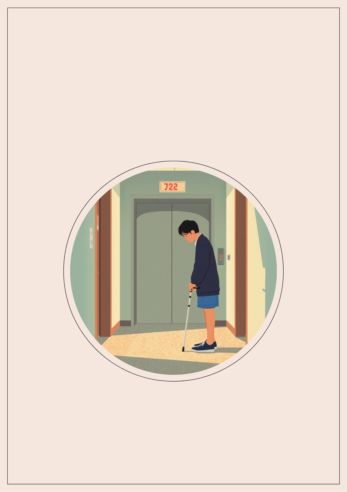
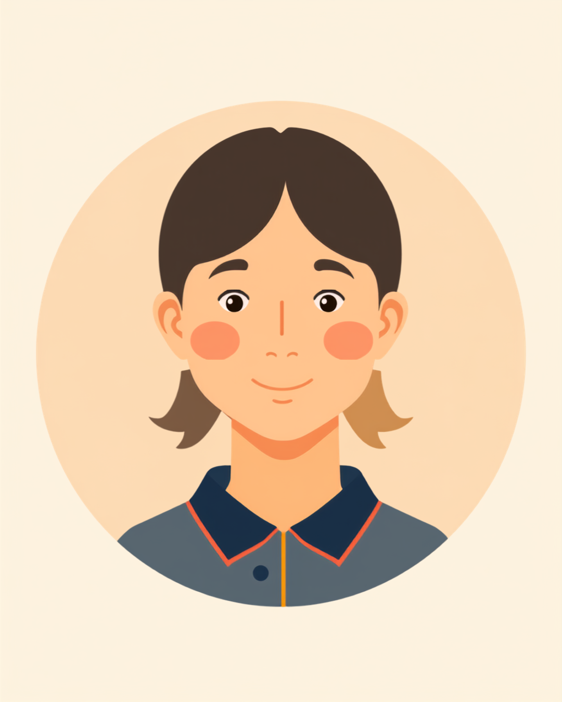

「杖のことを伝えたら、その場で不採用に」下肢障害と仕事の摩擦
就労支援の現場で関わってきた中で、杖を使って働く方から繰り返し聞いてきた言葉があります。「面接で杖のことを話したとたん、空気が変わった気がした」というものです。下肢障害があり杖を使っている方は、車椅子を使っている方とはまた違う扱われ方をされることがあるようです。車椅子であれば「配慮が必要な人」だとすぐに伝わる一方で、杖の場合は「それくらいなら大丈夫でしょう」と見た目だけで判断され、必要な配慮を伝える機会そのものを失ってしまうことがあります。
本人にとっては、杖をついて歩くだけでも人より時間がかかり、長時間の立位や重い荷物を持つことには実際の負担があります。それでも「車椅子じゃないから」という理由だけで、配慮の対象から静かに外されてしまう。そうした経験を重ねるうちに、「杖のことは、もう話さない方がいいのかもしれない」と考えるようになる方も少なくないようです。
「面接で杖のことを話したら、その場の空気が変わったのが分かりました。『車椅子じゃないので、そこまで大変じゃないですよね』って言われて、はいそうですねって答えちゃったんですけど、あれ絶対よくなかったなって後で思いました。結局その会社は落ちて、次の面接でも似たような空気になって、もう3社連続です。車椅子の人の方が『配慮が必要な人』だってはっきり分かってもらえるみたいで、正直ちょっと羨ましいって思うことすらあります。自分でもそんなこと思うのやだなと思うんですけど。」

車椅子でもない、健常者でもない。「杖歩行」という中途半端な扱われ方
下肢障害があり杖を使っている方が感じやすいのは、車椅子ほど分かりやすく配慮されるわけでもなく、かといって健常者と同じようにも扱ってもらえないという、宙ぶらりんな立ち位置です。同じ下肢の障害でも、移動手段の違いだけで職場や採用の場での伝わり方に差が出てしまうことがあります。
身体障害者手帳の制度上は、車椅子でも杖でも下肢の機能障害として同じく等級が判定される場合があります。それにもかかわらず、日常のやり取りの中では「車椅子＝配慮が必要」「杖＝そこまでではない」という無意識の線引きが生まれやすいようです。この線引きのしわ寄せを受けるのは、多くの場合、杖を使っている本人です。
「入社して半年経ちますけど、いまだに荷物運びを頼まれます。『杖だけなら大丈夫でしょ』って言われて、断れなくて持ったら、次の日足首がパンパンに腫れて、結局2日休みました。上司に言えばよかったんですけど、面接のときに『杖くらいなら特に配慮いらないですよね』って自分で言っちゃったのを覚えてて、今さら違いますとは言い出しにくくて。避難訓練のときも、みんな階段を駆け下りる中、一人だけ最後尾でゆっくり降りるのが、地味にしんどいです。」
職場にどう伝える、必要な配慮を言葉にするために
杖を使っていることを伝えるとき、「車椅子ではないので大丈夫です」と、つい自分から配慮を手放してしまう場面があります。面接や入社直後の緊張した状況では、なおさらそう答えやすくなるようです。しかしその一言が、後から配慮を求めにくくする原因になってしまうこともあります。
具体的な場面に絞って伝えるという考え方
下肢障害の状態や歩行の仕組みをすべて説明しようとすると、かえって伝わりにくくなることがあります。業務に関わる具体的な場面だけに絞って伝える方法が、双方にとって負担が少ないとされています。
- 「基本的なデスクワークは問題ありませんが、長時間の立ち仕事は難しい場合があります」
- 「重い荷物を運ぶ作業は避けたいので、別の方法をお願いできると助かります」
- 「エレベーターを使わせてほしいです。階段の昇り降りに時間がかかります」
- 「歩くのが少しゆっくりなだけで、日常の会話や作業に支障はありません」
病名や障害の詳細まで伝える義務はありません。信頼できる上司や人事担当者に、業務に関わる範囲でまず共有し、そこからチーム内に必要な情報だけ広げてもらう、という進め方をとっている方もいるようです。面接の段階から「杖を使っていますが、デスクワーク中心であれば問題ありません」のように、できることとできないことをセットで伝えておくと、入社後の調整がしやすくなったという声も聞かれます。
使える制度と、一人で抱えないための相談先
身体障害者手帳という選択肢
下肢障害は、身体障害者手帳の肢体不自由の区分に含まれる場合があります。等級は下肢の機能低下の程度や日常生活への影響によって異なり、車椅子か杖かという移動手段の違いだけで等級が決まるわけではないとされています。詳しくは主治医や自治体の障害福祉窓口に確認するのが確実です（2026年9月時点の情報です）。手帳を取得すると、障害者雇用枠での就職や、企業側の合理的配慮を前提にした働き方を選びやすくなる場合があります。
障害者雇用枠は、杖を使っている方も対象
身体障害者手帳を取得していれば、車椅子でも杖でも同じく障害者雇用制度の対象になるとされています。「杖くらいで障害者枠を使っていいのだろうか」とためらう方もいるようですが、制度上は移動手段の違いによって対象から外れることはありません（2026年9月時点の情報です）。就労移行支援事業所や障害者専門の転職エージェントでは、下肢障害に理解のある求人を紹介してもらえる場合もあります。
相談できる窓口
- 主治医・整形外科／リハビリテーション科（歩行状態の記録や、働き方についての意見書の相談）
- 職場に選任されている産業医（50人以上の事業場に選任義務あり）
- 自治体の障害福祉窓口、身体障害者手帳の相談窓口
- 就労移行支援事業所（体調管理を含めた就労準備や職場との調整）
よくある質問
関連記事
この記事に、聞いてみたいことはありますか？
「自分の場合はどうなんだろう」と思ったことを、気軽に書いてみてください。いただいた質問は個別にお返事したうえで、匿名で記事にすることがあります。
mimemime代表。就労支援の現場経験をもとに、障がいのある方の働く不安に寄り添う記事を執筆。